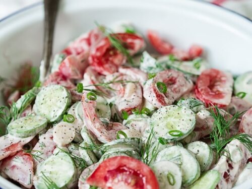

Tomato and Cucumber Salad

Description
This salad (or salat) is common in many parts of the world, not only in Russia! But it is also very common to eat
in Russian cuisine, especially during warmer weather but is also eaten year around. It is easy to make and
perfect to eat when your in a rush. You can also add onion or other vegetables instead of bell pepper, like
radishes. Every family has their own way of making it.
Ingredients
- 2-3 Small Cucumbers
- 2 Heirloom Tomatoes
- 1 Bell Pepper
- Red Onion (optional)
- Olive Oil or Sunflower Oil
- Salt, Pepper
- Sour cream
- Chopped dill
Steps
- Cut tomatoes into small pieces and place in a bowl. Top with salt and oil to taste and let sit while
preparing everything else.
- Meanwhile, chop cucumbers, bell peppers and onion(optional).
- Add each one to the bowl on top of the tomatoes.
- After chopping everything, mix together and add pepper and salt to taste. The tomatoes that we added to the beginning
have been marinating for a while, and this should help with determining how much more salt to add.
- Chop dill, add and mix.
- At the end, add some sour cream.
- Mix thoroughly and serve!
Back